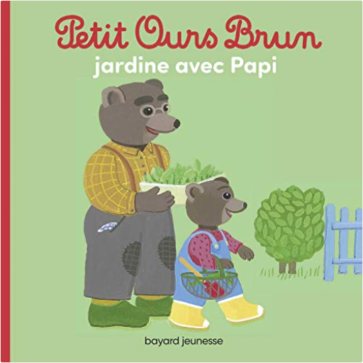
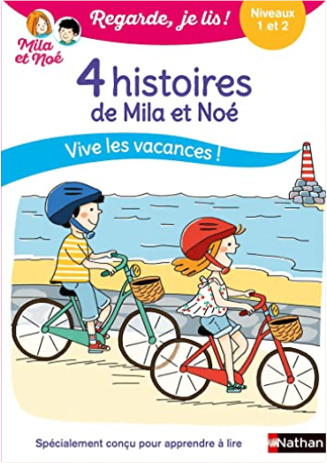

Julien
Collection Total:
2 100 Items
Last Updated:
Feb 15, 2025
Shelf:
Books
Movies
Albums
Videogames
Games
BD
BD Camille
Blu-ray
Business
Camille
Comics
Cooking
Lego
Manga
Pauline
Photography
Sport
Star Wars
T'choupi
Travel
TV Shows
Un livre dont vous êtes le héro
Vinyl
Walt Disney
2
3
4
5
6

petit ours brun jardine avec papi
hélène serre, danièle bour
B07MWYZR2R
petit ours brun s'habille tout seul
marie aubinais, danièle bour
2747052443
petite poule rousse
céline alvarez
B083WCSFL6
Le pique-nique de la famille Souris
Kazuo Iwamura
2211036422
quel est ce fruit ?
anne crausaz
2352894271
quel est ce légume ?
anne crausaz
2352894263
qui se cache dans le jardin ?
louison nielman
2215138947

Regarde je lis ! 4 histoires de Mila et Noé : vive les vacances !
Éric Battut
2095000595
Regarde je lis ! BD, tome 3 : Mila et Noé et le parcours aventure
Éric Battut
2095015207
Regarde, je lis ! tome 1 : Le vélo de Mila
Éric Battut
2091932272
Regarde, je lis ! tome 5 : La licorne de la cabane
Éric Battut
2091932655
Regarde, je lis ! tome 7 : La dent perdue
Éric Battut
2091932671
Regarde, je lis ! tome 8 : Vive les amis !
Éric Battut
209193268X
Regarde, je lis ! tome 14 : L'arrivée de Pato
Eric Battut
2091933317
2
3
4
5
6

 Made with Delicious Library
Made with Delicious Library